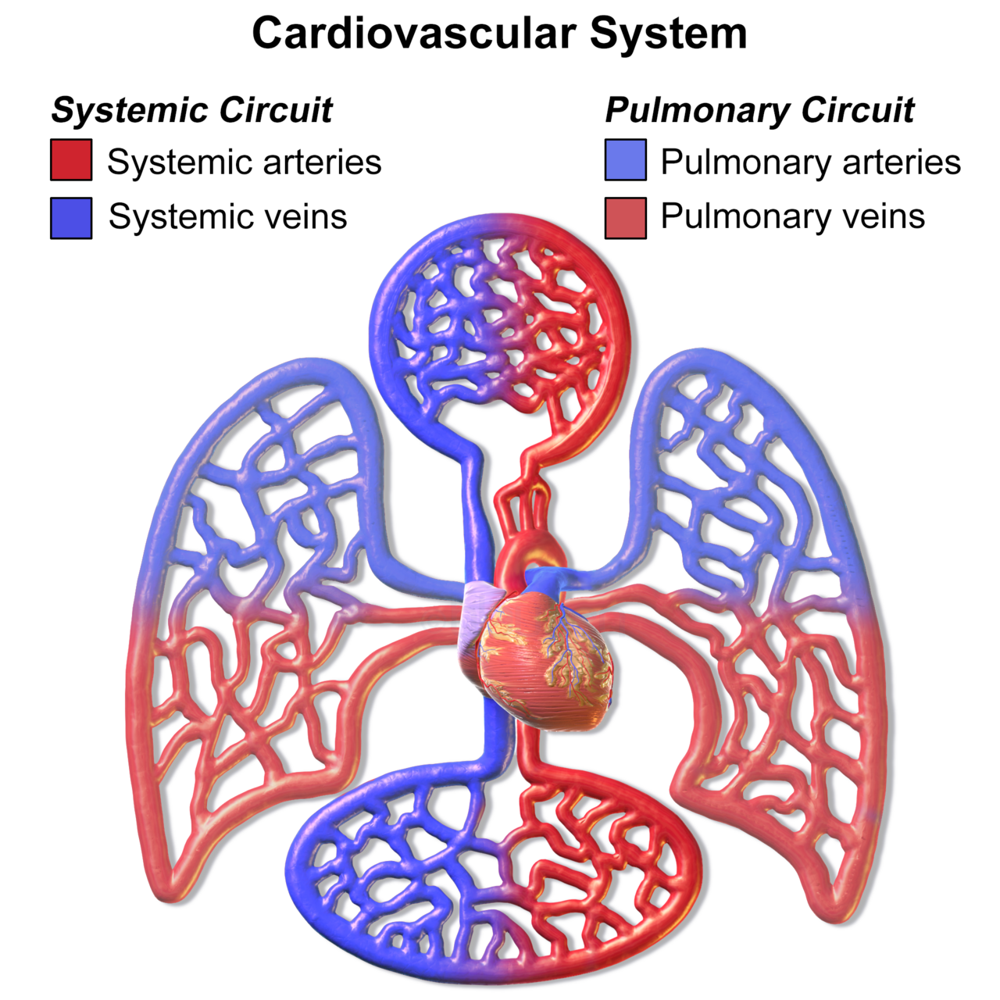
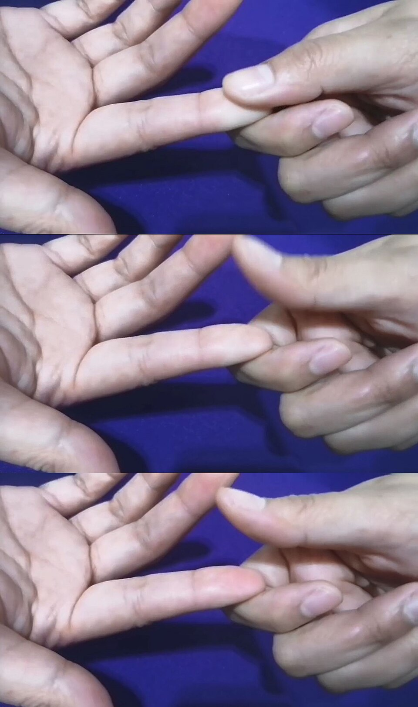
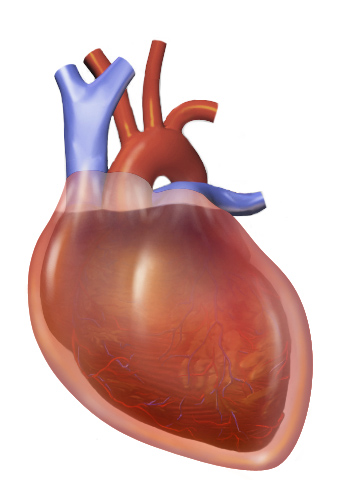
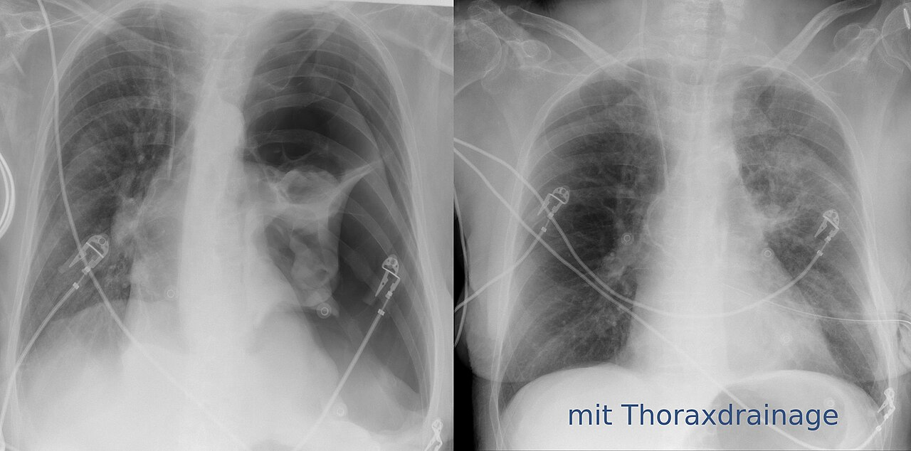

הגישה לחולה בשוק
מה זה שוק, איך מזהים אותו ליד המיטה ומה עושים בדקות הראשונות לפי סוג השוק
בסוף המפגש תדעו
- להגדיר שוק ולמיין אותו לארבעה סוגים: היפובולמי, קרדיוגני, חסימתי וחלוקתי (ספטי, אנפילקטי ונוירוגני)
- להסביר את מנגנוני הפיצוי של הגוף ואת משוואת אספקת החמצן
- לזהות שוק ליד המיטה ולהכיר את מגבלות הכלים: בדיקה גופנית, סימנים חיוניים, מדד שוק, לקטט וחוסר בסיס
- לנהל שוק מדמם: החייאה לשליטה בנזק, יחס 1:1:1, פרוטוקול עירוי מסיבי וחומצה טרנקסמית
- להכיר את העקרונות של טיפול בשוק חלוקתי, קרדיוגני וחסימתי
מה זה שוק ואיפה הבעיה?
שוק הוא אספקת דם לא מספקת לרקמות, שמתבטאת בפגיעה באיברי המטרה: לקטט עולה, שינוי בהכרה, פחות שתן ועלייה באנזימי הכבד. לא רק חמצן חסר: הדם מביא לתאים גם חומרי מזון, בופרים והורמונים

👆 לחצו על אזור בציור כדי לקרוא על סוג השוק
הלב: כשל של המשאבה, עם כיווץ כלי דם מפצה: "שוק קר". הסיבה השכיחה: מחלת לב כלילית, אוטם חריף או השלכותיו
כלי הדם הגדולים: אובדן נפח. דימום, או אובדן נוזלים בהקאות, שלשולים, פיסטולות ונקזים. תפוקת לב נמוכה בגלל מילוי נמוך, תנגודת כלי דם גבוהה, גפיים קרות
מחזור הדם הקטן: הרחבת כלי דם ופיזור לא תקין של נפח הדם. שלושה סוגים עיקריים: ספטי (Septic), אנפילקטי (Anaphylactic) ונוירוגני (Neurogenic) אחרי פגיעה ב-spinal cord. גם משבר אדרנלי. לרוב "שוק חם"
מחוץ ללב ולריאות: חזה אוויר בלחץ, טמפונדה, פריקרדיטיס מכווצת ותסחיף ריאתי מסיבי. הטיפול: להסיר את החסימה
איך הגוף מפצה
אספקת חמצן וצריכתו
- במנוחה: אספקה של כ-1,000 מ״ל חמצן לדקה וצריכה של כ-250 (רבע). רוויה בדם ורידי מעורב: כ-75%
- יש רזרבה גדולה. עלייה בהמוגלובין מ-8 ל-10 מעלה את האספקה בכ-25%
איך נראה חולה בשוק
- מראה ומצב נפשי: אדישות, תגובות איטיות, חוסר שקט. פנים מתוחות וחרדות, עיניים שקועות
- עור: חיוור או אפרפר, קר, לח ודביק. כתמים (mottling) באזורים הנמוכים של הגוף
- ורידים שטחיים: קרוסים ולא מתמלאים בלחיצה. פעימות ה-jugular veins בקושי נראות
- דופק: בדרך כלל מהיר, קטן וחוטי. לחץ הדם נמוך ולחץ הדופק צר
- נשימה: מהירה, בעומק משתנה. צמא, הקאות וירידה בשתן
- חם או קר? שוק חלוקתי לרוב "חם" עם גפיים חמות. היפובולמי וקרדיוגני "קרים" עם גפיים קרות

ארבע דרגות לפי ATLS
- לחץ הדם יורד רק בדרגה 3: אצל גבר במשקל 75 ק״ג זה כ-2 ליטר דם. כמו שש פחיות משקה
- הדרגות נקבעו באופן שרירותי ולא נבדקו היטב. חולים רבים לא מראים את כל הסימנים
- דופק: לא רגיש ולא סגולי לדימום. כאב וחרדה מעלים אותו
- ברדיקרדיה יחסית (דופק מתחת ל-100 עם לחץ סיסטולי מתחת ל-90) מופיעה בבני אדם. דופק מתחת ל-60 מבשר רע
מה עוזר לזהות שוק מוקדם?
- מדד שוק: דופק חלקי לחץ סיסטולי. טוב יותר מכל אחד מהם לבד, גם בספסיס, באוטם ובמיילדות. מדד שוק מותאם: דופק חלקי לחץ עורקי ממוצע
- לחץ סיסטולי מתחת ל-110 לפני בית החולים: נקודת מפנה בתמותה. 15% מהחולים האלה מתו בבית החולים
- בקשישים עם יתר לחץ דם, ערכים "תקינים" יכולים להסתיר תת-זילוח
- המוגלובין: ערך תקין לא שולל דימום משמעותי. ערך נמוך שמופיע מהר מעיד בדרך כלל על דימום קשה
חמצת, היפותרמיה וקרישה לקויה
- זילוח ירוד יוצר חמצת לקטית וצריכת גורמי קרישה. נוזלים קרים ובכמות גדולה מוסיפים קור ודילול
- אנזימי הקרישה עובדים הכי טוב ב-37 מעלות וב-pH של 7.4. החולה הקר מדמם יותר ממה שבדיקות הקרישה מראות, כי המעבדה מחממת את הדגימה
- חמצת: מטפלים בגורם ולא במספר. טיפול ב-pH לבד לא הראה תועלת
- הדרך לשבור את המעגל: לעצור את הדימום ולמנוע קירור
החייאה לשליטה בנזק
פצועים חודרים בגו עם לחץ סיסטולי מתחת ל-90. מניעת נוזלים עד לשליטה בדימום שיפרה את ההישרדות באופן מובהק
כפי שמסוכם ב-Sabiston 22, פרק 33 עמ׳ 239עירוי מסיבי
- יחס 1:1:1 של פלזמה, טסיות ותאים, כשאין דם מלא. מחקר PROPPR: אין הבדל בתמותה ב-24 שעות וב-30 יום, אבל יותר חולים הגיעו לעצירת דימום ופחות מתו מדימום ב-24 השעות הראשונות
- דם מלא (סוג O עם נוגדנים בטיטר נמוך): ייתכן שעדיף על רכיבים, אם זמין
- יחידה אחת של טסיות מאפרזיס שווה לשש יחידות. לכן היא ניתנת על כל 6 יחידות תאים ו-6 פלזמה
- המוגלובין יורד מאוחר בדימום פעיל. מחליטים לפי דופק, לחץ דם ולקטט
כלי הדם מתרחבים
שוק קרדיוגני
- לב ימני: נוזלים בזהירות עד אאוולמיה. אחר כך דובוטמין או מילרינון. להימנע מפנילפרין: הוא מעלה את התנגודת הריאתית
- לב שמאלי: קודם לקבוע את מצב הנפח: משקל, בצקות, אולטרסאונד של ה-IVC. החולה יכול להיות עמוס, יבש או מאוזן
- עם לחץ דם גבוה: ניטרוגליצרין או ניקרדיפין להורדת העומס
- לחץ ותפוקה נמוכים: אדרנלין או דופמין. אם אין תגובה: תמיכה מכנית (בלון תוך-אאורטלי, מכשיר עזר לחדר, ECMO)
שוק חסימתי: מסירים את הסיבה


חולה בשוק: חמש שאלות
מחקרים שכדאי להכיר
1,310 פצועים קשה. אין הבדל בהישרדות עם תפקוד טוב אחרי 6 חודשים (53.7% לעומת 53.5%). תמותה ב-28 יום: 17.3% לעומת 21.8%
PATCH-Trauma Investigators (Gruen RL et al.) N Engl J Med 2023;389:127-361,604 פצועים עם הפעלת פרוטוקול דימום מסיבי. תמותה ב-28 יום: 25.3% לעומת 26.1%, בלי הבדל. שיעור אירועי פקקת דומה
Davenport R et al. JAMA 2023;330:1882-91324 פצועים בסיכון לעירוי מסיבי. לא חסך מוצרי דם ב-24 שעות (12 לעומת 11 יחידות). אירועי פקקת: 35% לעומת 24%
Bouzat P et al. JAMA 2023;329:1367-75 (מצוטט ב-Sabiston 22)432 פצועים בשוק מדמם. התוצאה המשולבת (מוות או פינוי לקטט לקוי): 64% לעומת 65%, בלי יתרון למוצרי הדם
Crombie N et al. Lancet Haematol 2022;9:e250-61חמישה דברים לקחת למחלקה
- שוק הוא זילוח לא מספק של רקמות. מחפשים פגיעה באיברים: לקטט, הכרה, שתן
- ארבעה סוגים: היפובולמי, קרדיוגני, חסימתי וחלוקתי (ספטי, אנפילקטי ונוירוגני). לפעמים יחד
- לחץ הדם יורד מאוחר. הבדיקה הגופנית, מדד שוק, לקטט וחוסר בסיס עוזרים לזהות מוקדם
- בשוק מדמם: לעצור את הדימום, לתת דם במקום ליטרים של סליין, לשמור על החולה חם
- חסימה מנקזים, דימום עוצרים, בספסיס נותנים אנטיביוטיקה ושולטים במקור. הסוג קובע את הטיפול